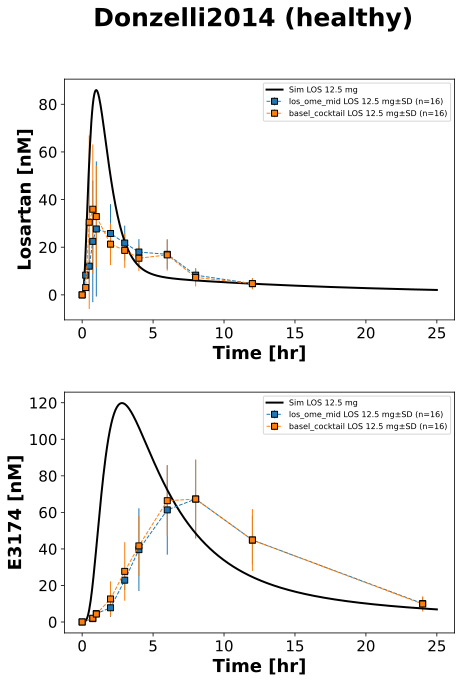

|  |
../../../../src/pkdb_models/models/losartan/experiments/studies/donzelli2014.py
from typing import Dict
from sbmlsim.data import DataSet, load_pkdb_dataframe
from sbmlsim.fit import FitMapping, FitData
from sbmlutils.console import console
from pkdb_models.models import losartan
from pkdb_models.models.losartan.experiments.base_experiment import (
LosartanSimulationExperiment,
)
from pkdb_models.models.losartan.experiments.metadata import (
Tissue, Route, Dosing, ApplicationForm, Health, \
Fasting, LosartanMappingMetaData, Coadministration, Genotype,
)
from sbmlsim.plot import Axis, Figure
from sbmlsim.simulation import Timecourse, TimecourseSim
from pkdb_models.models.losartan.helpers import run_experiments
class Donzelli2014(LosartanSimulationExperiment):
"""Simulation experiment of Donzelli2014."""
interventions = ["los_ome_mid", "basel_cocktail"]
colors = {
"los_ome_mid": "tab:blue",
"basel_cocktail": "tab:orange",
}
info = {
"los": "losartan",
"e3174": "exp3174",
}
def datasets(self) -> Dict[str, DataSet]:
dsets = {}
for fig_id in ["Fig1"]:
df = load_pkdb_dataframe(f"{self.sid}_{fig_id}", data_path=self.data_path)
for label, df_label in df.groupby("label"):
dset = DataSet.from_df(df_label, self.ureg)
# unit conversion to mole/l
if label.startswith("losartan_"):
dset.unit_conversion("mean", 1 / self.Mr.los)
elif label.startswith("exp3174_"):
dset.unit_conversion("mean", 1 / self.Mr.e3174)
dsets[f"{label}"] = dset
# console.print(dsets)
# console.print(dsets.keys())
return dsets
def simulations(self) -> Dict[str, TimecourseSim]:
Q_ = self.Q_
tcsims = {}
tcsims[f"po_los12.5"] = TimecourseSim(
[Timecourse(
start=0,
end=25 * 60, # [min]
steps=500,
changes={
**self.default_changes(),
#"BW": Q_(self.bodyweight, "kg"),
"PODOSE_los": Q_(12.5, "mg") * self.Mr.los/self.Mr.losp,
},
)]
)
# console.print(tcsims)
return tcsims
def fit_mappings(self) -> Dict[str, FitMapping]:
mappings = {}
for k, sid in enumerate(self.info):
name = self.info[sid]
for intervention in self.interventions:
mappings[f"fm_po_los12.5_{sid}_{intervention}"] = FitMapping(
self,
reference=FitData(
self,
dataset=f"{name}_{intervention}",
xid="time",
yid="mean",
yid_sd="mean_sd",
count="count",
),
observable=FitData(
self, task=f"task_po_los12.5", xid="time", yid=f"[Cve_{sid}]",
),
metadata=LosartanMappingMetaData(
tissue=Tissue.PLASMA,
route=Route.PO,
application_form=ApplicationForm.TABLET,
dosing=Dosing.SINGLE,
health=Health.HEALTHY,
fasting=Fasting.FASTED,
coadministration=Coadministration.COCKTAIL,
),
)
# console.print(mappings)
return mappings
def figures(self) -> Dict[str, Figure]:
fig = Figure(
experiment=self,
sid="Fig1",
num_rows=2,
name=f"{self.__class__.__name__} (healthy)",
)
plots = fig.create_plots(
xaxis=Axis(self.label_time, unit=self.unit_time), legend=True
)
plots[0].set_yaxis(self.label_los, unit=self.unit_los)
plots[1].set_yaxis(self.label_e3174, unit=self.unit_e3174)
for k, sid in enumerate(self.info):
name = self.info[sid]
# simulation
plots[k].add_data(
task=f"task_po_los12.5",
xid="time",
yid=f"[Cve_{sid}]",
label=f"Sim LOS 12.5 mg",
color="black",
)
for intervention in self.interventions:
# data
plots[k].add_data(
dataset=f"{name}_{intervention}",
xid="time",
yid="mean",
yid_sd="mean_sd",
count="count",
label=f"{intervention} LOS 12.5 mg",
color=self.colors[intervention],
)
return {
fig.sid: fig,
}
if __name__ == "__main__":
out = losartan.RESULTS_PATH_SIMULATION / Donzelli2014.__name__
out.mkdir(parents=True, exist_ok=True)
run_experiments(Donzelli2014, output_dir=Donzelli2014.__name__)
{kind=link}